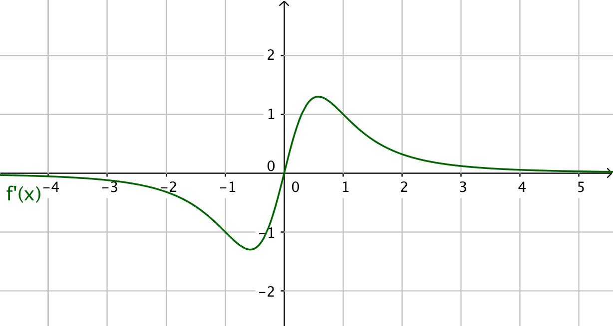
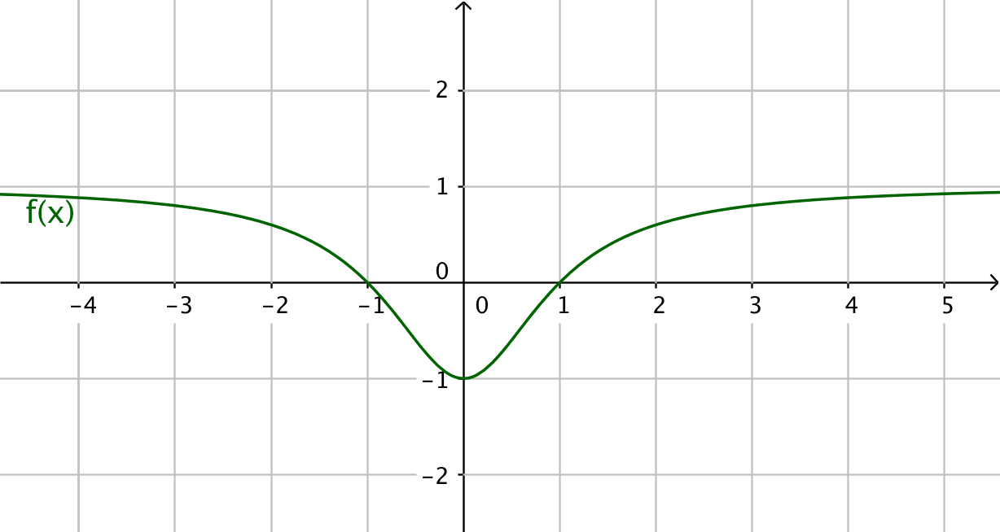
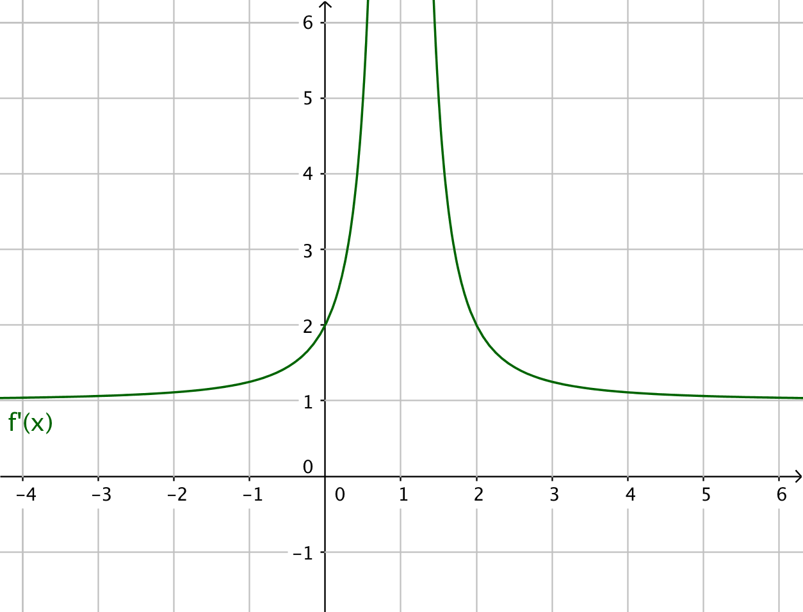

13. Undersökning av rationella funktioner
Sedan har vi kvar det svåraste. Att undersöka rationella funktioner. Egentligen är det inte svårt, det tar bara tid och det är några saker du måste komma ihåg att beakta.
Exempel 1 Bestäm när funktionen \( f(x)=\dfrac{x}{x^2+1} \) avtar och växer.
Exempel 2 Bestäm extremvärden, största och minsta värden, för funktionen \( f(x)=\dfrac{2}{x^2-1} \).
När vi undersöker rationella funktioner gör vi följande:
- Bestäm för vilka tal som funktionen inte är definierad.
- Derivera funktionen.
- Sök nollställen för derivatans täljare och nämnare.
- Bilda ett teckenschema där du kombinerar tecknen för täljaren och nämnaren.
- Svara på frågan.
Uppgifter
- Grafen av funktionen \( f \):s derivatafunktion \( f' \) är ritad på bilden.

Bestäm utgående från bilden följande:
- Den punkt där funktionen \( f \) byter rikting.
I \( x=0 \) (den punkt där derivatan har värdet 0).
- Funktionen \( f \) är avtagande då
derivatafunktionen är negativ, \( -\infty < x < 0 \).
- Fuktionen \( f \) är växande då
derivatafunktionen är positiv, \( 0 < x < \infty \).
- Den punkt där funktionen \( f \) byter rikting.
- I bilden är grafen av funktionen \( f \) ritad.

Berätta hur grafen av derivatafunktionen \( f' \) beter sig.
- \( f \) byter riktning då \( x=0 \) , alltså har \( f' \) ett nollställe i \( x=0 \).
- \( f \) avtar då \( x < 0 \), alltså är \( f' \) negativ.
- \( f \) växer då \( x > 0 \), alltså är \( f' \) positiv.
Grafen av \( f' \) ser ut som
- Grafen av funktionen \( f(x) \):s derivatafunktion \( f’(x) \) är uppritad på bilden.

Berätta om hur funktionen \( f(x) \) beter sig.
- \( f'(x) \) saknar nollställen, betyder att \( f \) inte byter riktning.
- \( f'(x) \) är positiv, betyder att \( f \) är växande.
- Alltså är \( f \) strängt växande.
- Eftersom \( f'(x) \) inte är definerad då \( x=1 \) är \( f \) inte heller definierad då \( x=1 \).
Grafen av \( f \) kan vara följande:

- Bestäm extremvärden för funktionen \( f(x)=\dfrac{-1}{x^2-1} \).
Funktionen \( f \) är definierad då \( x\not=\pm1 \).
Derivatafunktionen ser ut som \( f'(x)= \dfrac{2x}{(x^2-1)^2} \). För att kunna bestämma extremvärden måste vi veta täljaren och nämnarens nollställen och bilda ett teckenschema.
Täljaren \( 2x=0 \) har nollstället \( x=0 \) och nämnaren \( (x^2-1)^2=0 \Leftrightarrow x^2-1=0 \Leftrightarrow x=\pm1 \).
Vi bildar ett teckenschema:
\( \begin{array}{l|cccccccc} & & -1 & & 0 & & 1 & \\ \hline \textrm{täljaren, } 2x & - & - & - & 0 & + & + & + \\ \textrm{nämnaren, } (x^2-1)^2 & + & 0 & + & + & +& 0 & + \\ \textrm{kvoten, } f'(x) & - & | & - & 0 & + & | & + \\ f(x) & \searrow & | & \searrow & & \nearrow & | & \nearrow \\ \end{array} \)
Vi har ett lokalt minsta värde i \( x=0 \), \( f(0)=\dfrac{-1}{0^2-1}=1 \). Funktionen saknar andra lokala extremvärden.
- Bestäm tangentens ekvation för \( y=\dfrac{1}{x} \) då \( x=1 \).
För att ha en linje behöver du en punkt på linjen och en riktningskoefficient. Hur bestämmer du en punkt som är gemensam för tangenten och kurvan?
Derivatafunktionen är \( f'(x)=\dfrac{-1}{x^2} \). Koordinaterna för tangenten är \( x=1 \) och \( y=f(1)=1 \). Tangentens riktningskoefficient är \( f'(1)=-1 \).
En linjes ekvation genom två punkter är \( y-y_0=k(x-x_0) \) som i detta fall är \( y+1=-1(x-1) \). Tangentens ekvation är \( y=-x \).
- Bestäm största och minsta värdet för funktionen \( f(x)=-\dfrac{3}{x^2-9} \) i intervallet \( [-1,2] \).
\( f’(x)=\dfrac{-6x}{(x^2-9)^2} \).
\( f'(x)=0 \) då täljaren får värdet noll, alltså då \( -6x=0 \) som är då \( x=0 \).
Största och minsta värdet i ett intervall får vi då \( f'(x)=0 \) eller i intervallers ändpunkter.
\( f(-1)=\dfrac{-3}{(-1)^2-9} = \dfrac{3}{8} \).
\( f(0)=\dfrac{-3}{(0)^2-9} = \dfrac{1}{3} \).
\( f(2)=\dfrac{-3}{2^2-9} = \dfrac{3}{5} \).
Minsta värdet är \( \dfrac{1}{3} \) och största värdet \( \dfrac{3}{5} \).
- Bestäm extremvärden för funktionen \( f(x)=\dfrac{x-1}{x^2+2} \).
Funktionen är definierad då \( x^2+2\not=0 \Leftrightarrow x^2\not=-2 \) som aldrig uppfylls i de reella talens mängd.
\( f'(x)= \dfrac{-x^2+2x+2}{(2x^2+2)^2} \).
Täljaren har nollställena \( 1\pm \sqrt{3} \) och nämnarens nollställen får vi som \( (2x^2+2)^2=0 \) som saknar lösningar.
Vi gör ett teckenschema:
\( \begin{array}{l|ccccc} & & 1-\sqrt{3} & & 1+\sqrt{3} & \\ \hline \textrm{täljaren, } -x^2+2x+2 & - & 0 & + & 0 & - \\ \textrm{nämnaren, } (x^2+2)^2 & + & + & + & + & + \\ \textrm{kvoten, } f'(x) & - & 0 & + & 0 & - \\ f(x) & \searrow & & \nearrow & & \searrow \\ \end{array} \)
Största värdet får då \( x=1+\sqrt{3} \) och minsta värdet då \( x=1-\sqrt{3} \).
Största värdet är \( \dfrac{1}{4}(\sqrt{3}-1) \) och minsta värdet är \( \dfrac{1}{4}(-\sqrt{3}-1) \).
- Bestäm extremvärdena för \( f(x)=\dfrac{x^2}{x^2-1} \).
Funktionen är definierad då \( x^2-1\not=0 \), alltså då \( x\not=\pm1 \).
Derivatafunktionen är \( f'(x)=\dfrac{-2x}{(x^2-1)^2} \). Täljarens nollställe är \( -2x=0 \Leftrightarrow x=0 \) och nämnarens nollställe är \( (x^2-1)^2=0 \Leftrightarrow x^2-1=0 \Leftrightarrow x=\pm 1 \).
Vi gör ett teckenschema:
\( \begin{array}{l|ccccccc} & & -1& & 0 & & 1 & \\ \hline \textrm{täljaren, } -2x & + & + & + & 0 & - & - & - \\ \textrm{nämnaren, } (x^2-1)^2 & + & 0 & + & + & + & 0 & + \\ \textrm{kvoten, } f'(x) & + & | & + & 0 & - & | & + \\ f(x) & \nearrow & |& \nearrow & & \searrow & | & \searrow \\ \end{array} \)
Vi har ett lokalt största värde då \( x=0 \), \( f(0)= \dfrac{0^2}{0^2-1} =0 \).
- Hur beter sig funktionen \( f(x)=\dfrac{x}{x^2-x} \)?
Funktionen är inte definierad då \( x^2-x=0 \), alltså då \( x\not=0 \) eller \( x\not=1 \).
\( f'(x)=\dfrac{-x^2}{(x^2+x)^2} \). För att bestämma hur funktionen beter sig söker vi nollställen för täljaren och nämnaren och bildar ett teckenschema.
Täljaren: \( -x^2=0 \) då \( x=0 \) och nämnaren: \( (x^2+x)^2=0 \) då \( x=0 \) eller \( x=1 \). Eftersom nämnaren är i kvadrat så är den alltid positiv.
Teckenschema
\( \begin{array}{l|ccccc} & & 0 & & 1 \\ \hline \textrm{täljare, }-x^2 & - & 0& - & - & -\\ \textrm{nämnare, } (x^2+x)^2 & + & 0 & + & 0 & + \\ \textrm{kvot, }f'(x) & -& | & - & | & - \\ f(x) & \searrow & & \searrow & & \searrow \\ \end{array} \)
Funktionen är hela tiden avtagande.
- Visa att funktionen \( f(x)=\dfrac{2}{x-2} \) är avtagande.
Funktionen \( f \) är definierad i alla punkter utom då \( x-2=0 \Leftrightarrow x=2 \).
Derivatafunktionen är \( f'(x)=\dfrac{-2}{(x-2)^2} \). För att veta hur funktionen beter sig undersöker vi täljaren och nämnaren skilt. Täljaren: -2 saknar nollställe. För nämnaren \( (x-2)^2 \) så har den värdet noll då \( x-2=0 \) alltså \( x=2 \). Eftersom täljaren är i kvadrat är den annars positiv.
Vi bildar ett teckenschema:
\( \begin{array}{l|ccc} & & 2 & \\ \hline \textrm{täljaren, } -2 & - & - & - \\ \textrm{nämnaren, } (x-2)^2 & + & 0 & + \\ \textrm{kvoten, } f'(x) & - & | & - \\ f(x) & \searrow & & \searrow\\ \end{array} \)
Funktionen är alltså avtagande.